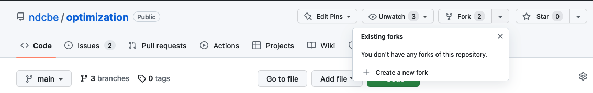
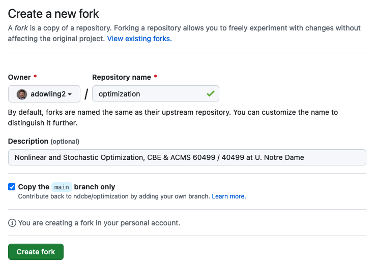
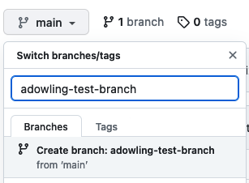
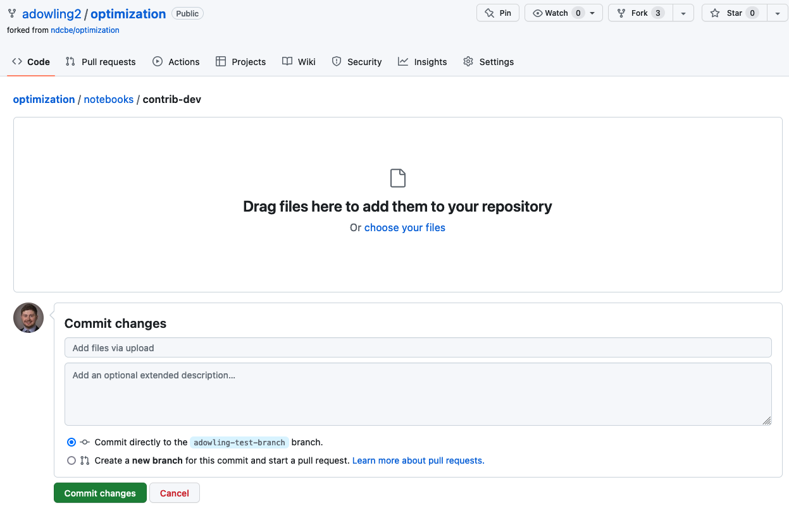
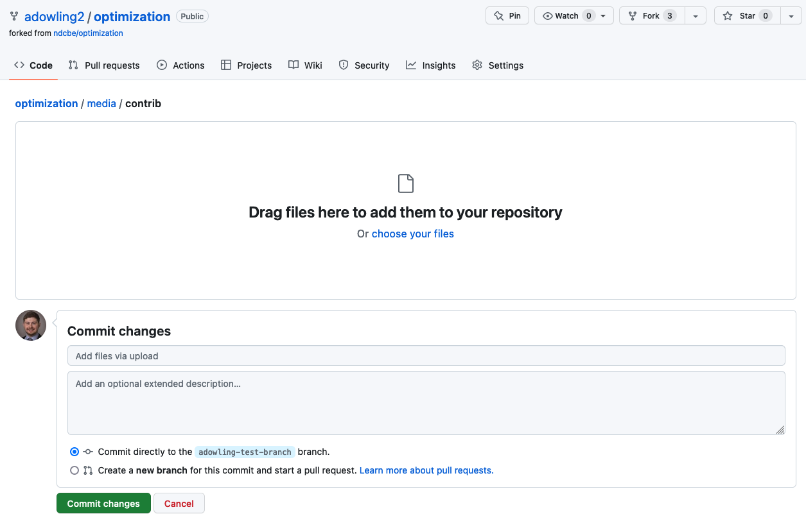
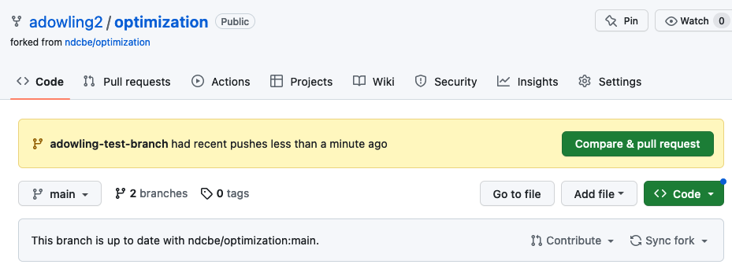
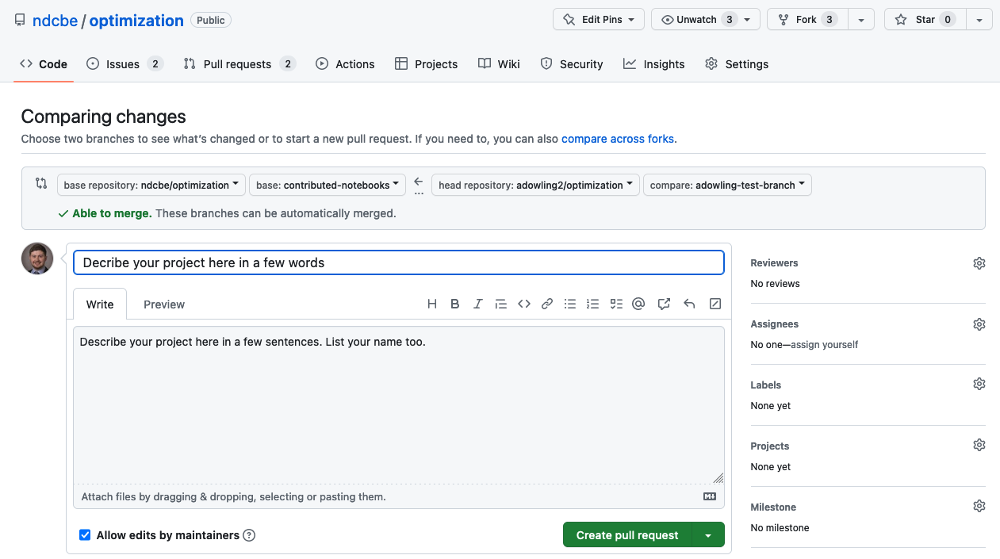

Contribution Instructions
Contents
Contribution Instructions#
Step 0: Formatting Check#
Follow these tips to make sure your project notebook looks great:
The top of the notebook should be a Markdown cell with
# Informative title here. The title you choose will appear on the class website table on contents. Choose a title that is concise and exciting.Under the title, write
**Prepared by:** Your name (xyz@nd.edu, 2023)you may optionally make your name a hyperlink to your GitHub profile (recommended). If you edited an existing notebook, write**Prepared by: Prof. Alexander Dowling, Your name (xyz@nd.edu, 2023).Review the tutorial on creating publication quality plots.
Follow the guidelines on code formatting.
Organize your notebook with sections
##and subsections###. Unless really neccessary, do not have subsubsections####, as this looks ugly on the website.Read your notebook carefully for grammar and spelling. Optionally, you can try this experimental spell checker.
If you are creating class excerises, put the solutions (in a code cell) between the comments
### BEGIN SOLUTIONand### END SOLUTION. When I publish the notebooks to the website, a script will automatically remove the answer and replace it with# Your solution here.
Step 1: Create a GitHub Account#
Keep the username professional and do not include personal identifying information such as your birthday or birthyear.
Step 2: Create a Fork in GitHub#
On GitHub for the class repository, find the bottom to create a fork:

Then create a fork under your username. It is best to keep the default settings:

Step 3: Create a Branch in GitHub#
On GitHub, find the drop down box containing “Branch:”.

To create a branch, type a meaningful name such as your project description or your last names. Do not include spaces.
Step 4: Upload your .ipynb File#
First, rename your .ipynb file to contain a few descriptive words. You may use - instead of spaces. For example, Systems-Bio-Regression.ipynb.
Select your new branch from the dropdown menu. Then navigate to the /notebooks/contrib-dev folder and choose the Upload files button. IMPORTANT: The screenshot below shows the files being added to the branch main. Instead, you should select the branch you created in Step 3.

Step 5: Upload any Image Files#
First, rename any of your image files (recommended formats: .png, .jpeg, .jpg) to contain a few descriptive words. You may use - instead of spaces. For example, constraint_set_visualization.png.
Select your new branch from the dropdown menu. Then navigate to the /media/contrib folder and choose the Upload files button. IMPORTANT: The screenshot below shows the files being added to the branch main. Instead, you should select the branch you created in Step 3.

Step 6: Create a Pull Request#
On the main class repository, create a pull request to merge your branch on your fork into the contributed-notebooks branch on the main class repository. After uploading the new notebook file to your branch, you should see an orange/yellow box with your branch name.

Choose Compare & pull request.
This should take you to a screen with the title Open a pull request:

Make sure you see contributed_notebooks in the base repository <– your branch name in your fork repository. Then add a descriptive comment (what did you change) and click Create pull request.
Tag @adowling2 in the comments of your pull request.
Step 7: Run JypyterBook to Publish to the Class Website#
Prof. Dowling will take care of this step.